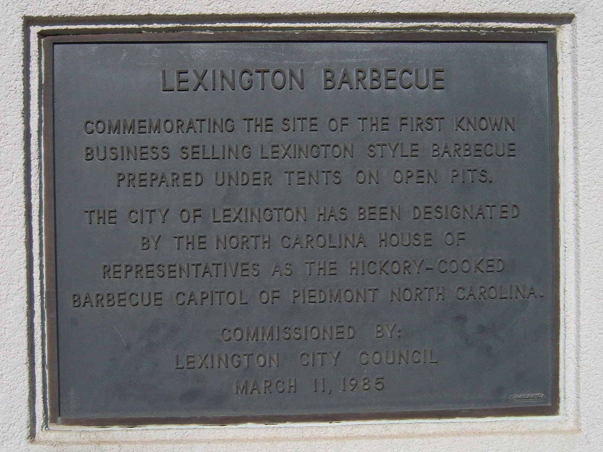

a style · NCLexington-style barbecue
also: Lexington barbecue · Piedmont-style barbecue · Western-style barbecue · Western North Carolina barbecue
In the Piedmont the sauce is 'dip' and the slaw is 'red slaw' or 'barbecue slaw'. Barbecue is ordered chopped, coarse-chopped or sliced, and 'brown' means the crusty outside of the shoulder.

Pork shoulders cooked slowly over hardwood coals, usually hickory, then chopped, coarse-chopped or sliced and dressed with a thin red sauce the Piedmont calls dip: vinegar, ketchup or tomato, water, salt, pepper and red pepper, sweeter or hotter by the house. It comes with red slaw — cabbage dressed with the same dip instead of mayonnaise — and hushpuppies, on a tray or a bun. The style belongs to the Piedmont west of Raleigh. Lexington, a Davidson County town of about 20,000 that calls itself the Barbecue Capital of the World and counted more than twenty barbecue restaurants in 2003, is its center; Greensboro, Salisbury, Shelby and High Point are its other towns.
The story Cited · web-ourstate-lexington-barbecue
Sid Weaver sold barbecue from a tent by the old Davidson County courthouse in 1919, and Jess Swicegood ran a stand a few yards from his within the decade. Warner Stamey, born in 1911, boarded with his sister in Lexington for high school and learned the pits from both men; he sold barbecue in Shelby after graduating, came back in 1938 to buy Swicegood's place and rename it, and in 1953 opened Stamey's on High Point Road in Greensboro. Stamey's own history credits him with putting hushpuppies beside barbecue. Alton Beck, who had worked for Weaver, built the town's first bricks-and-mortar barbecue restaurant on West Center Street in 1938. Wayne Monk, who had worked for Holland Tussey and took Stamey as his model, opened Lexington Barbecue beside U.S. 29/70 in 1962; in 1983 a politically connected local attorney asked whether he would cook for President Reagan, and he served the heads of government at that year's economic summit in Williamsburg, Virginia — Thatcher and Mitterrand among them. In 2003 the James Beard Foundation named the restaurant an America's Classic.
The east–west argument is a newspaper invention that outlived the columns. Jerry Bledsoe of the Greensboro Daily News, self-styled 'world's leading, foremost barbecue authority', and Dennis Rogers of the Raleigh News & Observer, 'oracle of the holy grub', traded columns for decades over whether ketchup belongs in the sauce. Bledsoe said Rogers 'has ruined any chances of this state being distinguished in its barbecue'; Rogers wrote that people who would put ketchup in sauce fed to innocent children 'are capable of most anything'. The joke reached the General Assembly in the 2005–06 session, when House Bill 21 and Senate Bill 47 would have made the Lexington Barbecue Festival the official barbecue festival of North Carolina; with nearly half the state eating eastern, neither passed. House Bill 433 passed in 2007 with a narrower title — 'Official Food Festival of the Piedmont Triad Region of the State of North Carolina' — which named no style official for the state.
How it is done Tradition
Shoulders roast for about ten hours over coals from a wood fire beside the pits — at Lexington Barbecue mostly oak, with hickory when it can be had — meat side down over the embers until it browns, then turned. Some Piedmont places cook on gas or electric cookers. The cooked shoulder is chopped, coarse-chopped or sliced to order, and the crusty outside can be asked for as 'brown'. The dip goes on at the block and stands on the table. A tray is barbecue and red slaw; a plate adds hushpuppies; a sandwich is chopped pork and red slaw on a bun.
Today Cited · wp-lexington-barbecue-festival
Lexington counted more than twenty barbecue restaurants for about 20,000 people in 2003; Lexington Barbecue, Bar-B-Q Center and Cook's are in and around town, Stamey's in Greensboro, Red Bridges Barbecue Lodge in Shelby. The Lexington Barbecue Festival closes Main Street each October — October 24 in 2026 — and has been the Official Food Festival of the Piedmont Triad since 2007.
Facts
| state | NC |
|---|---|
| meat | shoulder |
| base | lexington-dip |
| fuel | wood |
| region | The North Carolina Piedmont, North Carolina |
| where | 35.7970, -80.2740 (region) · OpenStreetMap · open in maps Inference |
| links | Barbecue in North Carolina — Wikipedia · Lexington Barbecue Festival — Wikipedia · Lexington Barbecue — Our State (Bob Garner, 2012) · Stamey's Barbecue — History |
| confidence | high · updated 2026-09-15 |
Not to be confused with
- Eastern North Carolina barbecue — Red slaw and a reddish dip on chopped or sliced shoulder mean Lexington; pale mayonnaise slaw and a clear vinegar sauce on meat with crisp skin chopped through it mean the east. If the counter understands 'brown', you are in the Piedmont.
- Light tomato barbecue — South Carolina's light tomato sauce is the same vinegar-and-ketchup idea, and the SC Barbeque Association maps it with the Piedmont. The tell is on the plate: red slaw and hushpuppies are Lexington; hash over rice is South Carolina.
Its kin
Pages that point here
Pictures

{kind=link}
{kind=link}
{kind=link}
Sources
- Barbecue in North Carolina — Wikipedia · link
- Lexington, North Carolina — Wikipedia · link
- Lexington Barbecue Festival — Wikipedia · link
- Lexington Barbecue — Wikipedia · link
- North Carolina Barbecue Society — Wikipedia · link
- Coleslaw — Wikipedia · link
- History · link
- Stamey's Old Fashioned Barbecue (Bob Garner, 31 Aug 2012) · link
- Lexington Barbecue (Bob Garner, 2012-08-31) · link
- The Great Lexington Barbecue Cover-Up (Jeremy Markovich, 31 Mar 2015) · link
- Smoke, Fire as BBQ Bigshots Battle Over Ketchup (John Berman, World News Tonight, 2 Jun 2005) · link
- Defining the Styles (30 Nov 2009) · link
- Lexington Barbecue — official site · link
- North Carolina BBQ — Southern BBQ Trail · link
- BBQ History (Lake E. High Jr.) · link
- Holy Smoke: The Big Book of North Carolina Barbecue — John Shelton Reed, Dale Volberg Reed, with William McKinney, 2008 · link
Provenance marks: Cited a named source, linked · Harvested fetched from an open dataset · Tradition general knowledge of the tradition, hedged · Inference this project's reasoning · Field someone stood there. This record as JSON.